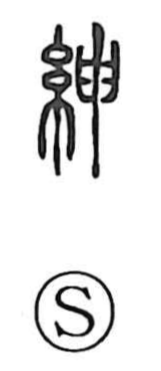

紳

Uncategorized
Kun: | On: shin
ceremonial sash ・ gentry ・ gentleman
Explanation
A phono-semantic character: the silk element points to a textile, while the phonetic 申, originally depicting a zigzag flash of lightning, lends both sound and the sense of something shooting out and stretching. Thus 紳 names the long, hanging belt of ritual attire—the great ceremonial belt (oobi). Because this grand belt was the mark of high officials, the character extended to mean people of rank, reflected in phrases such as shinshin (to tuck a mace into the belt) and compounds like kishin “men of high rank” and shinshi “gentleman.”